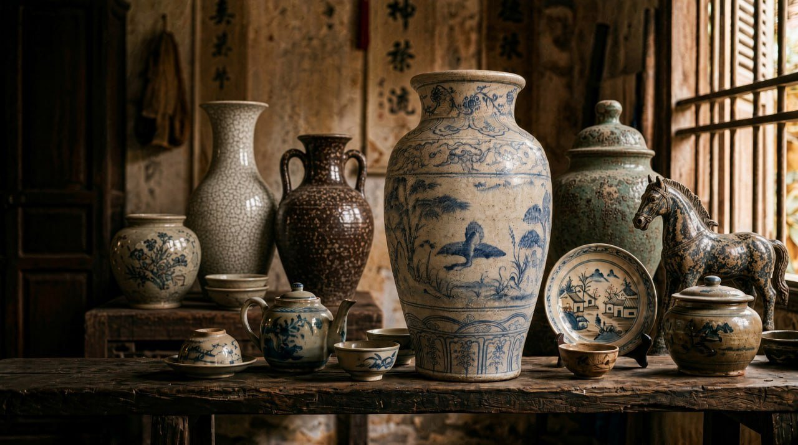
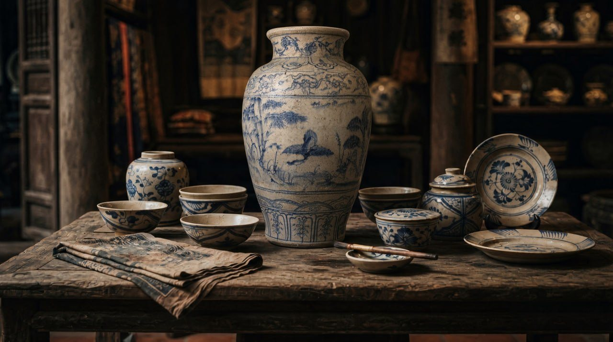

Gốm Việt xưa
Gốm Thuần Ngọc
Chạm thời gian, giữ tinh hoa.
Gốm Việt xưa từ kho của anh Đỗ Phương Thuần, người Cổ Loa. Mỗi món lên đây đều có một hồ sơ: ảnh bốn phía và đáy, số đo, tình trạng ghi cả chỗ sứt, và một dòng mua của ai, năm nào.

01
Rõ gốc
Mỗi món ghi mua của ai, năm nào. Món không ghi được dòng này thì không lên kệ.
02
Nói thật
Sứt, nứt, vá đều ghi ra và có ảnh riêng. Khách thấy đúng món mình sẽ nhận.
03
Gói kỹ
Giấy lụa, xốp hơi, hộp trong hộp. Món đến tay sai mô tả thì gửi lại, hoàn tiền.
Mới lên kệ
Các món đang có

GT-0198
Vò men nâu vẽ lá
Gốm Bát Tràng
2.600.000 đ
GT-0106
Bình men rạn vẽ trúc
Gốm Bát Tràng · khoảng thập niên 1970
2.900.000 đ
GT-0107
Hũ men lam vẽ cá
Gốm Lái Thiêu · khoảng thập niên 1980
650.000 đĐang giữ
GT-0103
Bình hồ lô men ngọc
Gốm Bát Tràng · khoảng thập niên 1980
950.000 đ
GT-0104
Chóe lớn men xanh đồng đắp nổi
Gốm Biên Hòa · khoảng thập niên 1960
Hỏi giá
GT-0101
Bình tỳ bà men lam vẽ hoa sen
Gốm Biên Hòa · khoảng thập niên 1960
2.400.000 đTheo làng gốm
Dòng gốm

Về kho
Một kho, mười nghìn món, mỗi món một chuyện.
Anh Thuần mua vào từng chiếc qua nhiều năm, giữ lại chứ không bán vội. Giờ kho mở dần, mỗi tuần một ít, món nào cũng soi kỹ rồi mới lên.
Đọc chuyện cái kho →